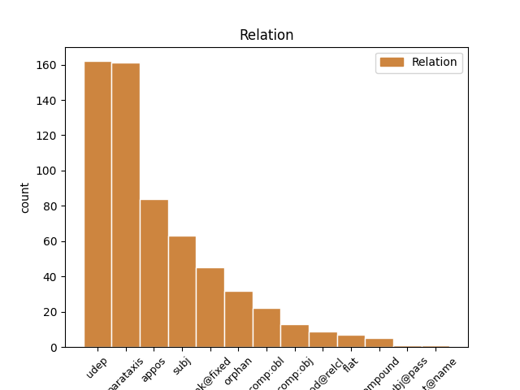
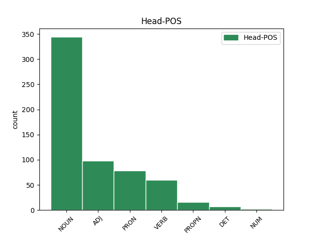
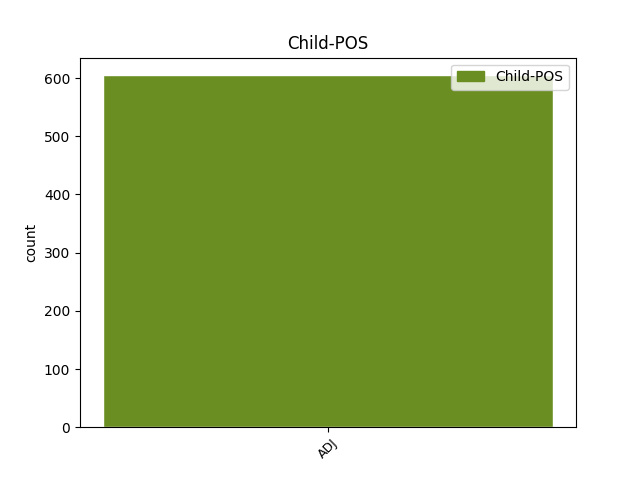

Distribution of features within this leaf



Agreement Rules sorted by frequency.
- When the dependent token is the parataxis(parataxis) of the head token, and the dependent token is ADJ.
1 Она _ _ _ _ 0 _ _ _
2 была _ _ _ _ 0 _ _ _
3 доверчивой _ _ _ _ 0 _ _ _
4 и _ _ _ _ 0 _ _ _
5 доброй _ _ _ _ 0 _ _ _
6 птицей _ _ _ _ 0 _ _ _
7 , _ _ _ _ 0 _ _ _
8 в _ _ _ _ 0 _ _ _
9 ней _ _ _ _ 0 _ _ _
10 чувствовался _ _ _ _ 0 _ _ _
11 прекрасный _ _ _ _ 0 _ _ _
12 характер характер NOUN _ Animacy=Inan|Case=Nom|Gender=Masc|Number=Sing 0 _ _ _
13 : _ _ _ _ 0 _ _ _
14 широкий широкий ADJ _ Case=Nom|Degree=Pos|Gender=Masc|Number=Sing 12 parataxis _ SpaceAfter=No
15 , _ _ _ _ 0 _ _ _
16 беспечный _ _ _ _ 0 _ _ _
17 , _ _ _ _ 0 _ _ _
18 дерзкий _ _ _ _ 0 _ _ _
19 . _ _ _ _ 0 _ _ _
1 Святой _ _ _ _ 0 _ _ _
2 равноапостольный _ _ _ _ 0 _ _ _
3 князь _ _ _ _ 0 _ _ _
4 Владимир Владимир PROPN _ Animacy=Anim|Case=Nom|Gender=Masc|Number=Sing 0 _ _ _
5 Великий великий ADJ _ Case=Nom|Degree=Pos|Gender=Masc|Number=Sing 4 appos _ _
6 назначил _ _ _ _ 0 _ _ _
7 князем _ _ _ _ 0 _ _ _
8 на _ _ _ _ 0 _ _ _
9 Волынь _ _ _ _ 0 _ _ _
10 своего _ _ _ _ 0 _ _ _
11 сына _ _ _ _ 0 _ _ _
12 Всеволода _ _ _ _ 0 _ _ _
13 , _ _ _ _ 0 _ _ _
14 которому _ _ _ _ 0 _ _ _
15 подчинялась _ _ _ _ 0 _ _ _
16 не _ _ _ _ 0 _ _ _
17 только _ _ _ _ 0 _ _ _
18 Волынь _ _ _ _ 0 _ _ _
19 , _ _ _ _ 0 _ _ _
20 но _ _ _ _ 0 _ _ _
21 и _ _ _ _ 0 _ _ _
22 все _ _ _ _ 0 _ _ _
23 червенские _ _ _ _ 0 _ _ _
24 города _ _ _ _ 0 _ _ _
25 до _ _ _ _ 0 _ _ _
26 предгорий _ _ _ _ 0 _ _ _
27 Карпат _ _ _ _ 0 _ _ _
28 . _ _ _ _ 0 _ _ _
1 Общее общий ADJ _ Case=Nom|Degree=Pos|Gender=Neut|Number=Sing 12 subj _ SpaceAfter=No
2 , _ _ _ _ 0 _ _ _
3 что _ _ _ _ 0 _ _ _
4 характерно _ _ _ _ 0 _ _ _
5 для _ _ _ _ 0 _ _ _
6 истории _ _ _ _ 0 _ _ _
7 конца _ _ _ _ 0 _ _ _
8 XX _ _ _ _ 0 _ _ _
9 века _ _ _ _ 0 _ _ _
10 , _ _ _ _ 0 _ _ _
11 - _ _ _ _ 0 _ _ _
12 глобализация глобализация NOUN _ Animacy=Inan|Case=Nom|Gender=Fem|Number=Sing 0 _ _ _
13 социальной _ _ _ _ 0 _ _ _
14 , _ _ _ _ 0 _ _ _
15 экономической _ _ _ _ 0 _ _ _
16 и _ _ _ _ 0 _ _ _
17 политической _ _ _ _ 0 _ _ _
18 жизни _ _ _ _ 0 _ _ _
19 народов _ _ _ _ 0 _ _ _
20 , _ _ _ _ 0 _ _ _
21 наряду _ _ _ _ 0 _ _ _
22 с _ _ _ _ 0 _ _ _
23 этим _ _ _ _ 0 _ _ _
24 - _ _ _ _ 0 _ _ _
25 глобализация _ _ _ _ 0 _ _ _
26 опасностей _ _ _ _ 0 _ _ _
27 , _ _ _ _ 0 _ _ _
28 грозящих _ _ _ _ 0 _ _ _
29 человеческому _ _ _ _ 0 _ _ _
30 роду _ _ _ _ 0 _ _ _
31 . _ _ _ _ 0 _ _ _
1 В _ _ _ _ 0 _ _ _
2 конце _ _ _ _ 0 _ _ _
3 XX _ _ _ _ 0 _ _ _
4 века _ _ _ _ 0 _ _ _
5 не _ _ _ _ 0 _ _ _
6 существует _ _ _ _ 0 _ _ _
7 иного _ _ _ _ 0 _ _ _
8 способа _ _ _ _ 0 _ _ _
9 сохранения _ _ _ _ 0 _ _ _
10 плодов _ _ _ _ 0 _ _ _
11 цивилизации _ _ _ _ 0 _ _ _
12 и _ _ _ _ 0 _ _ _
13 приобретения приобретение NOUN _ Animacy=Inan|Case=Gen|Gender=Neut|Number=Sing 0 _ _ _
14 новых новый ADJ _ Case=Gen|Degree=Pos|Number=Plur 13 udep _ SpaceAfter=No
15 , _ _ _ _ 0 _ _ _
16 кроме _ _ _ _ 0 _ _ _
17 сотрудничества _ _ _ _ 0 _ _ _
18 всех _ _ _ _ 0 _ _ _
19 стран _ _ _ _ 0 _ _ _
20 , _ _ _ _ 0 _ _ _
21 включая _ _ _ _ 0 _ _ _
22 относящиеся _ _ _ _ 0 _ _ _
23 к _ _ _ _ 0 _ _ _
24 противоположным _ _ _ _ 0 _ _ _
25 социальным _ _ _ _ 0 _ _ _
26 системам _ _ _ _ 0 _ _ _
27 , _ _ _ _ 0 _ _ _
28 - _ _ _ _ 0 _ _ _
29 во _ _ _ _ 0 _ _ _
30 имя _ _ _ _ 0 _ _ _
31 сохранения _ _ _ _ 0 _ _ _
32 мира _ _ _ _ 0 _ _ _
33 и _ _ _ _ 0 _ _ _
34 разрешения _ _ _ _ 0 _ _ _
35 в _ _ _ _ 0 _ _ _
36 интересах _ _ _ _ 0 _ _ _
37 человечества _ _ _ _ 0 _ _ _
38 глобальных _ _ _ _ 0 _ _ _
39 проблем _ _ _ _ 0 _ _ _
40 . _ _ _ _ 0 _ _ _
1 - _ _ _ _ 0 _ _ _
2 А _ _ _ _ 0 _ _ _
3 голова _ _ _ _ 0 _ _ _
4 у _ _ _ _ 0 _ _ _
5 нее _ _ _ _ 0 _ _ _
6 красная красный ADJ _ Case=Nom|Degree=Pos|Gender=Fem|Number=Sing 0 _ _ _
7 - _ _ _ _ 0 _ _ _
8 красная красный ADJ _ Case=Nom|Degree=Pos|Gender=Fem|Number=Sing 6 flat _ SpaceAfter=No
9 , _ _ _ _ 0 _ _ _
10 так _ _ _ _ 0 _ _ _
11 и _ _ _ _ 0 _ _ _
12 горит _ _ _ _ 0 _ _ _
13 ! _ _ _ _ 0 _ _ _
14 - _ _ _ _ 0 _ _ _
15 пылко _ _ _ _ 0 _ _ _
16 вскричал _ _ _ _ 0 _ _ _
17 младший _ _ _ _ 0 _ _ _
18 . _ _ _ _ 0 _ _ _
1 Как _ _ _ _ 0 _ _ _
2 было _ _ _ _ 0 _ _ _
3 записано _ _ _ _ 0 _ _ _
4 в _ _ _ _ 0 _ _ _
5 академическом _ _ _ _ 0 _ _ _
6 Уставе _ _ _ _ 0 _ _ _
7 1747 _ _ _ _ 0 _ _ _
8 года _ _ _ _ 0 _ _ _
9 , _ _ _ _ 0 _ _ _
10 " _ _ _ _ 0 _ _ _
11 всяк _ _ _ _ 0 _ _ _
12 академик _ _ _ _ 0 _ _ _
13 иметь _ _ _ _ 0 _ _ _
14 должен _ _ _ _ 0 _ _ _
15 при _ _ _ _ 0 _ _ _
16 себе _ _ _ _ 0 _ _ _
17 адъюнкта _ _ _ _ 0 _ _ _
18 , _ _ _ _ 0 _ _ _
19 который _ _ _ _ 0 _ _ _
20 должность _ _ _ _ 0 _ _ _
21 имеет _ _ _ _ 0 _ _ _
22 помощника _ _ _ _ 0 _ _ _
23 академику _ _ _ _ 0 _ _ _
24 , _ _ _ _ 0 _ _ _
25 а _ _ _ _ 0 _ _ _
26 притом _ _ _ _ 0 _ _ _
27 стараться _ _ _ _ 0 _ _ _
28 должен _ _ _ _ 0 _ _ _
29 как _ _ _ _ 0 _ _ _
30 академик _ _ _ _ 0 _ _ _
31 об _ _ _ _ 0 _ _ _
32 адъюнкте _ _ _ _ 0 _ _ _
33 , _ _ _ _ 0 _ _ _
34 так _ _ _ _ 0 _ _ _
35 и _ _ _ _ 0 _ _ _
36 адъюнкт адъюнкт NOUN _ Animacy=Anim|Case=Nom|Gender=Masc|Number=Sing 0 _ _ _
37 сам сам ADJ _ Case=Nom|Degree=Pos|Gender=Masc|Number=Sing 36 orphan _ _
38 о _ _ _ _ 0 _ _ _
39 себе _ _ _ _ 0 _ _ _
40 , _ _ _ _ 0 _ _ _
41 чтобы _ _ _ _ 0 _ _ _
42 ему _ _ _ _ 0 _ _ _
43 со _ _ _ _ 0 _ _ _
44 временем _ _ _ _ 0 _ _ _
45 заступить _ _ _ _ 0 _ _ _
46 академика _ _ _ _ 0 _ _ _
47 своего _ _ _ _ 0 _ _ _
48 , _ _ _ _ 0 _ _ _
49 по _ _ _ _ 0 _ _ _
50 отбытии _ _ _ _ 0 _ _ _
51 его _ _ _ _ 0 _ _ _
52 , _ _ _ _ 0 _ _ _
53 место _ _ _ _ 0 _ _ _
54 " _ _ _ _ 0 _ _ _
55 . _ _ _ _ 0 _ _ _
1 Партнеры _ _ _ _ 0 _ _ _
2 по _ _ _ _ 0 _ _ _
3 соглашению _ _ _ _ 0 _ _ _
4 " _ _ _ _ 0 _ _ _
5 будут _ _ _ _ 0 _ _ _
6 совместно _ _ _ _ 0 _ _ _
7 заниматься _ _ _ _ 0 _ _ _
8 маркетинговой _ _ _ _ 0 _ _ _
9 и _ _ _ _ 0 _ _ _
10 рекламно рекламный ADJ _ Case=Ins|Degree=Pos|Gender=Fem|Number=Sing 12 compound _ _
11 - _ _ _ _ 0 _ _ _
12 выставочной выставочный ADJ _ Case=Ins|Degree=Pos|Gender=Fem|Number=Sing 0 _ _ _
13 деятельностью _ _ _ _ 0 _ _ _
14 , _ _ _ _ 0 _ _ _
15 взаимодействовать _ _ _ _ 0 _ _ _
16 при _ _ _ _ 0 _ _ _
17 проведении _ _ _ _ 0 _ _ _
18 опытной _ _ _ _ 0 _ _ _
19 эксплуатации _ _ _ _ 0 _ _ _
20 экспортного _ _ _ _ 0 _ _ _
21 специального _ _ _ _ 0 _ _ _
22 вооружения _ _ _ _ 0 _ _ _
23 и _ _ _ _ 0 _ _ _
24 техники _ _ _ _ 0 _ _ _
25 за _ _ _ _ 0 _ _ _
26 границей _ _ _ _ 0 _ _ _
27 , _ _ _ _ 0 _ _ _
28 а _ _ _ _ 0 _ _ _
29 импортного _ _ _ _ 0 _ _ _
30 - _ _ _ _ 0 _ _ _
31 в _ _ _ _ 0 _ _ _
32 органах _ _ _ _ 0 _ _ _
33 внутренних _ _ _ _ 0 _ _ _
34 дел _ _ _ _ 0 _ _ _
35 и _ _ _ _ 0 _ _ _
36 внутренних _ _ _ _ 0 _ _ _
37 войсках _ _ _ _ 0 _ _ _
38 " _ _ _ _ 0 _ _ _
39 . _ _ _ _ 0 _ _ _
1 И _ _ _ _ 0 _ _ _
2 на _ _ _ _ 0 _ _ _
3 это _ _ _ _ 0 _ _ _
4 накладывается _ _ _ _ 0 _ _ _
5 оптический _ _ _ _ 0 _ _ _
6 импульс импульс NOUN _ Animacy=Inan|Case=Nom|Gender=Masc|Number=Sing 0 _ _ _
7 , _ _ _ _ 0 _ _ _
8 который _ _ _ _ 0 _ _ _
9 очень _ _ _ _ 0 _ _ _
10 , _ _ _ _ 0 _ _ _
11 конечно _ _ _ _ 0 _ _ _
12 , _ _ _ _ 0 _ _ _
13 медленный медленный ADJ _ Case=Nom|Degree=Pos|Gender=Masc|Number=Sing 6 mod@relcl _ _
14 по _ _ _ _ 0 _ _ _
15 сравнению _ _ _ _ 0 _ _ _
16 с _ _ _ _ 0 _ _ _
17 аттосекундами _ _ _ _ 0 _ _ _
18 , _ _ _ _ 0 _ _ _
19 но _ _ _ _ 0 _ _ _
20 тем _ _ _ _ 0 _ _ _
21 не _ _ _ _ 0 _ _ _
22 менее _ _ _ _ 0 _ _ _
23 он _ _ _ _ 0 _ _ _
24 есть _ _ _ _ 0 _ _ _
25 . _ _ _ _ 0 _ _ _
1 В _ _ _ _ 0 _ _ _
2 России _ _ _ _ 0 _ _ _
3 в _ _ _ _ 0 _ _ _
4 ближайшем _ _ _ _ 0 _ _ _
5 будущем _ _ _ _ 0 _ _ _
6 возникнут _ _ _ _ 0 _ _ _
7 как _ _ _ _ 0 _ _ _
8 минимум _ _ _ _ 0 _ _ _
9 два _ _ _ _ 0 _ _ _
10 государственных _ _ _ _ 0 _ _ _
11 банка _ _ _ _ 0 _ _ _
12 пуповинной _ _ _ _ 0 _ _ _
13 крови _ _ _ _ 0 _ _ _
14 : _ _ _ _ 0 _ _ _
15 один _ _ _ _ 0 _ _ _
16 - _ _ _ _ 0 _ _ _
17 федеральный _ _ _ _ 0 _ _ _
18 , _ _ _ _ 0 _ _ _
19 другой другой ADJ _ Case=Nom|Degree=Pos|Gender=Masc|Number=Sing 21 subj@pass _ _
20 - _ _ _ _ 0 _ _ _
21 созданный создать VERB _ Aspect=Perf|Case=Nom|Gender=Masc|Number=Sing|Tense=Past|VerbForm=Part|Voice=Pass 0 _ _ _
22 по _ _ _ _ 0 _ _ _
23 инициативе _ _ _ _ 0 _ _ _
24 правительства _ _ _ _ 0 _ _ _
25 Москвы _ _ _ _ 0 _ _ _
26 и _ _ _ _ 0 _ _ _
27 финансируемый _ _ _ _ 0 _ _ _
28 из _ _ _ _ 0 _ _ _
29 бюджета _ _ _ _ 0 _ _ _
30 города _ _ _ _ 0 _ _ _
31 . _ _ _ _ 0 _ _ _
1 С _ _ _ _ 0 _ _ _
2 завидной _ _ _ _ 0 _ _ _
3 скоростью _ _ _ _ 0 _ _ _
4 ткнувшись _ _ _ _ 0 _ _ _
5 разок разок NOUN _ Animacy=Inan|Case=Acc|Gender=Masc|Number=Sing 0 _ _ _
6 - _ _ _ _ 0 _ _ _
7 другой другой ADJ _ Animacy=Inan|Case=Acc|Degree=Pos|Gender=Masc|Number=Sing 5 unk@fixed _ _
8 в _ _ _ _ 0 _ _ _
9 стенку _ _ _ _ 0 _ _ _
10 , _ _ _ _ 0 _ _ _
11 он _ _ _ _ 0 _ _ _
12 бодро _ _ _ _ 0 _ _ _
13 помчался _ _ _ _ 0 _ _ _
14 вдоль _ _ _ _ 0 _ _ _
15 нее _ _ _ _ 0 _ _ _
16 , _ _ _ _ 0 _ _ _
17 собирая _ _ _ _ 0 _ _ _
18 самый _ _ _ _ 0 _ _ _
19 " _ _ _ _ 0 _ _ _
20 плодородный _ _ _ _ 0 _ _ _
21 " _ _ _ _ 0 _ _ _
22 первый _ _ _ _ 0 _ _ _
23 слой _ _ _ _ 0 _ _ _
24 риса _ _ _ _ 0 _ _ _
25 . _ _ _ _ 0 _ _ _
1 То то PRON _ Animacy=Inan|Case=Nom|Gender=Neut|Number=Sing 0 _ _ _
2 есть _ _ _ _ 0 _ _ _
3 спрос _ _ _ _ 0 _ _ _
4 тоже _ _ _ _ 0 _ _ _
5 высокий высокий ADJ _ Case=Nom|Degree=Pos|Gender=Masc|Number=Sing 1 comp:obj _ SpaceAfter=No
6 . _ _ _ _ 0 _ _ _
1 Тем то PRON _ Animacy=Inan|Case=Ins|Gender=Neut|Number=Sing 0 _ _ _
2 самым самый ADJ _ Case=Ins|Degree=Pos|Gender=Neut|Number=Sing 1 flat@name _ _
3 пресса _ _ _ _ 0 _ _ _
4 стала _ _ _ _ 0 _ _ _
5 бы _ _ _ _ 0 _ _ _
6 вооруженней _ _ _ _ 0 _ _ _
7 при _ _ _ _ 0 _ _ _
8 выполнении _ _ _ _ 0 _ _ _
9 одной _ _ _ _ 0 _ _ _
10 из _ _ _ _ 0 _ _ _
11 своих _ _ _ _ 0 _ _ _
12 важнейших _ _ _ _ 0 _ _ _
13 функций _ _ _ _ 0 _ _ _
14 - _ _ _ _ 0 _ _ _
15 защите _ _ _ _ 0 _ _ _
16 Конституции _ _ _ _ 0 _ _ _
17 СССР _ _ _ _ 0 _ _ _
18 . _ _ _ _ 0 _ _ _
1 Ибо _ _ _ _ 0 _ _ _
2 он _ _ _ _ 0 _ _ _
3 сам сам ADJ _ Case=Nom|Degree=Pos|Gender=Masc|Number=Sing 6 comp:obl _ _
4 себе _ _ _ _ 0 _ _ _
5 - _ _ _ _ 0 _ _ _
6 мера мера NOUN _ Animacy=Inan|Case=Nom|Gender=Fem|Number=Sing 0 _ _ _
7 всего _ _ _ _ 0 _ _ _
8 сущего _ _ _ _ 0 _ _ _
9 , _ _ _ _ 0 _ _ _
10 даже _ _ _ _ 0 _ _ _
11 если _ _ _ _ 0 _ _ _
12 мысль _ _ _ _ 0 _ _ _
13 об _ _ _ _ 0 _ _ _
14 этом _ _ _ _ 0 _ _ _
15 в _ _ _ _ 0 _ _ _
16 его _ _ _ _ 0 _ _ _
17 сознании _ _ _ _ 0 _ _ _
18 никогда _ _ _ _ 0 _ _ _
19 не _ _ _ _ 0 _ _ _
20 возникала _ _ _ _ 0 _ _ _
21 . _ _ _ _ 0 _ _ _
Disagree Examples:
1 Два _ _ _ _ 0 _ _ _
2 крайних _ _ _ _ 0 _ _ _
3 окна _ _ _ _ 0 _ _ _
4 - _ _ _ _ 0 _ _ _
5 наши _ _ _ _ 0 _ _ _
6 , _ _ _ _ 0 _ _ _
7 остальные остальной ADJ _ Case=Nom|Degree=Pos|Number=Plur 9 subj _ _
8 - _ _ _ _ 0 _ _ _
9 соседей сосед NOUN _ Animacy=Anim|Case=Gen|Gender=Masc|Number=Plur 0 _ _ _
10 . _ _ _ _ 0 _ _ _
1 " _ _ _ _ 0 _ _ _
2 Не _ _ _ _ 0 _ _ _
3 люди _ _ _ _ 0 _ _ _
4 же _ _ _ _ 0 _ _ _
5 ! _ _ _ _ 0 _ _ _
6 " _ _ _ _ 0 _ _ _
7 воскликнет _ _ _ _ 0 _ _ _
8 иной _ _ _ _ 0 _ _ _
9 любитель любитель NOUN _ Animacy=Anim|Case=Nom|Gender=Masc|Number=Sing 0 _ _ _
10 непознанного непознанный ADJ _ Case=Gen|Degree=Pos|Gender=Neut|Number=Sing 9 udep _ SpaceAfter=No
11 . _ _ _ _ 0 _ _ _
1 В _ _ _ _ 0 _ _ _
2 России _ _ _ _ 0 _ _ _
3 в _ _ _ _ 0 _ _ _
4 ближайшем _ _ _ _ 0 _ _ _
5 будущем _ _ _ _ 0 _ _ _
6 возникнут _ _ _ _ 0 _ _ _
7 как _ _ _ _ 0 _ _ _
8 минимум _ _ _ _ 0 _ _ _
9 два _ _ _ _ 0 _ _ _
10 государственных _ _ _ _ 0 _ _ _
11 банка банк NOUN _ Animacy=Inan|Case=Gen|Gender=Masc|Number=Sing 0 _ _ _
12 пуповинной _ _ _ _ 0 _ _ _
13 крови _ _ _ _ 0 _ _ _
14 : _ _ _ _ 0 _ _ _
15 один _ _ _ _ 0 _ _ _
16 - _ _ _ _ 0 _ _ _
17 федеральный федеральный ADJ _ Case=Nom|Degree=Pos|Gender=Masc|Number=Sing 11 parataxis _ SpaceAfter=No
18 , _ _ _ _ 0 _ _ _
19 другой _ _ _ _ 0 _ _ _
20 - _ _ _ _ 0 _ _ _
21 созданный _ _ _ _ 0 _ _ _
22 по _ _ _ _ 0 _ _ _
23 инициативе _ _ _ _ 0 _ _ _
24 правительства _ _ _ _ 0 _ _ _
25 Москвы _ _ _ _ 0 _ _ _
26 и _ _ _ _ 0 _ _ _
27 финансируемый _ _ _ _ 0 _ _ _
28 из _ _ _ _ 0 _ _ _
29 бюджета _ _ _ _ 0 _ _ _
30 города _ _ _ _ 0 _ _ _
31 . _ _ _ _ 0 _ _ _
1 В _ _ _ _ 0 _ _ _
2 целом _ _ _ _ 0 _ _ _
3 среди _ _ _ _ 0 _ _ _
4 причин _ _ _ _ 0 _ _ _
5 смешения _ _ _ _ 0 _ _ _
6 генофондов _ _ _ _ 0 _ _ _
7 можно _ _ _ _ 0 _ _ _
8 назвать _ _ _ _ 0 _ _ _
9 нехватку _ _ _ _ 0 _ _ _
10 женщин _ _ _ _ 0 _ _ _
11 у _ _ _ _ 0 _ _ _
12 одной _ _ _ _ 0 _ _ _
13 из _ _ _ _ 0 _ _ _
14 контактирующих _ _ _ _ 0 _ _ _
15 сторон _ _ _ _ 0 _ _ _
16 , _ _ _ _ 0 _ _ _
17 смешанные _ _ _ _ 0 _ _ _
18 браки _ _ _ _ 0 _ _ _
19 по _ _ _ _ 0 _ _ _
20 различным _ _ _ _ 0 _ _ _
21 социальным _ _ _ _ 0 _ _ _
22 причинам _ _ _ _ 0 _ _ _
23 - _ _ _ _ 0 _ _ _
24 установление _ _ _ _ 0 _ _ _
25 добрососедских _ _ _ _ 0 _ _ _
26 отношений _ _ _ _ 0 _ _ _
27 посредством _ _ _ _ 0 _ _ _
28 родства _ _ _ _ 0 _ _ _
29 , _ _ _ _ 0 _ _ _
30 стремление _ _ _ _ 0 _ _ _
31 избежать _ _ _ _ 0 _ _ _
32 пагубных _ _ _ _ 0 _ _ _
33 последствий _ _ _ _ 0 _ _ _
34 инбридинга _ _ _ _ 0 _ _ _
35 , _ _ _ _ 0 _ _ _
36 уничтожение _ _ _ _ 0 _ _ _
37 мужской _ _ _ _ 0 _ _ _
38 части _ _ _ _ 0 _ _ _
39 населения _ _ _ _ 0 _ _ _
40 и _ _ _ _ 0 _ _ _
41 пленение пленение NOUN _ Animacy=Inan|Case=Nom|Gender=Neut|Number=Sing 0 _ _ _
42 женской женский ADJ _ Case=Gen|Degree=Pos|Gender=Fem|Number=Sing 41 udep _ SpaceAfter=No
43 , _ _ _ _ 0 _ _ _
44 приводящее _ _ _ _ 0 _ _ _
45 к _ _ _ _ 0 _ _ _
46 демографическому _ _ _ _ 0 _ _ _
47 геноциду _ _ _ _ 0 _ _ _
48 и _ _ _ _ 0 _ _ _
49 т. _ _ _ _ 0 _ _ _
50 д _ _ _ _ 0 _ _ _
51 . _ _ _ _ 0 _ _ _
1 Что что PRON _ Case=Acc 0 _ _ _
2 же _ _ _ _ 0 _ _ _
3 такого _ _ _ _ 0 _ _ _
4 еще _ _ _ _ 0 _ _ _
5 неведомого неведомый ADJ _ Case=Gen|Degree=Pos|Gender=Neut|Number=Sing 1 udep _ _
6 может _ _ _ _ 0 _ _ _
7 кино _ _ _ _ 0 _ _ _
8 ? _ _ _ _ 0 _ _ _